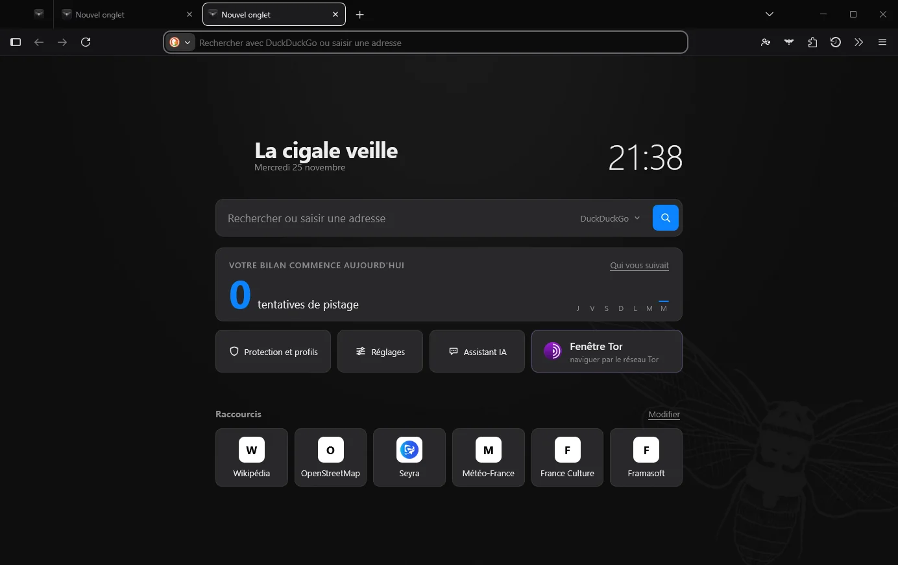
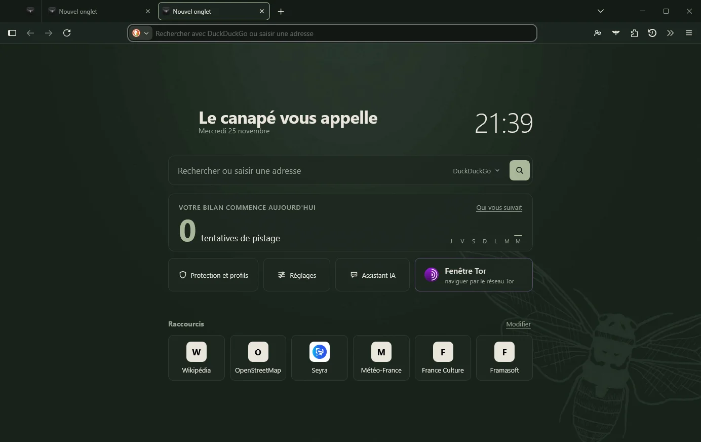
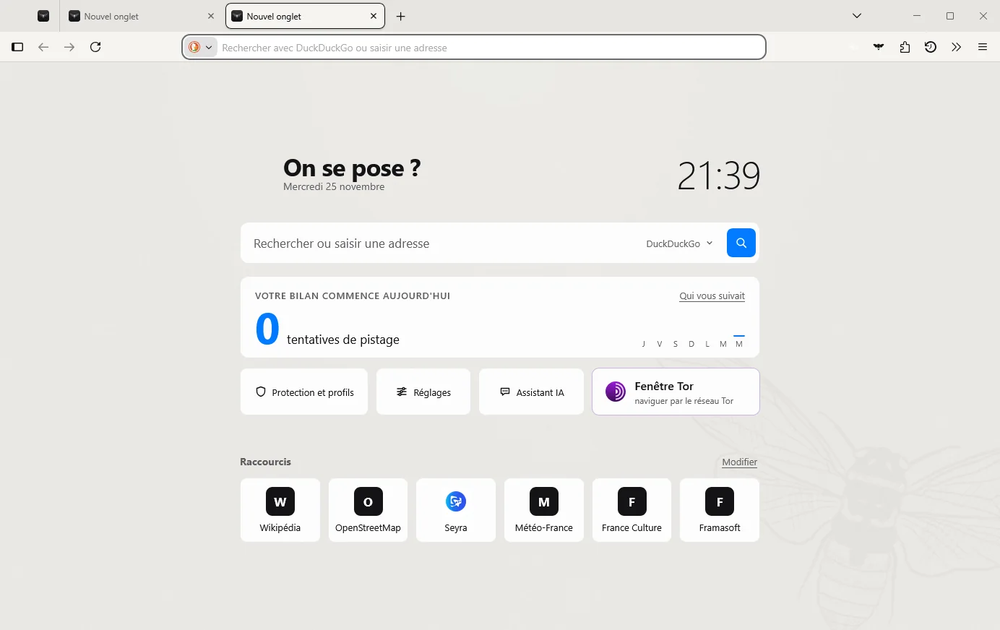
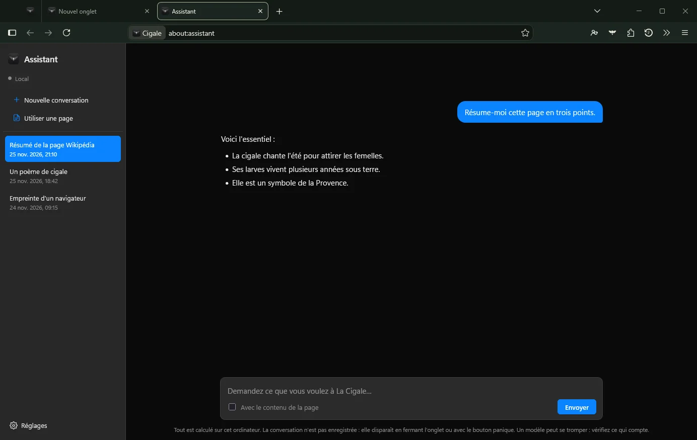

Nouveau : La Cigale 1.8.3
Nouveau : La Cigale 1.8.3
La Cigale
Le navigateur qui ne chante pas vos données.
Pas de version pour téléphone : La Cigale s'installe sur un ordinateur.

Firefox ESR réglé pour la vie privée, en français, libre et gratuit. Rien n'est envoyé à personne, et tout s'efface à la fermeture.
Dès le premier lancement
Protégé sans rien régler.
Ce que La Cigale fait sans qu'on lui demande.
Aucune télémétrie
Pas de rapports, pas d'études, pas de publicité dans les nouveaux onglets. Les programmes correspondants sont retirés du paquet.
uBlock Origin intégré
Traqueurs, publicités et bannières de cookies bloqués dès l'installation.
Anti-empreinte
Les réglages de Tor Browser.
DNS chiffré
Par Quad9, pas par votre fournisseur.
Adresse IP cachée
Fenêtre Tor ou vos proxys.
Rien ne reste
Cookies, historique et cache effacés à la fermeture, sauf pour les sites que vous gardez.
Arrivez avec vos affaires
Marque-pages, historique et mots de passe importés de Chrome, Edge ou Firefox.
Trois thèmes
Sobre comme un Mac. Provençal dans l'âme.


Protection
Tout est allumé. D'origine.
La page Protection montre l'état de chaque défense, comme les Réglages Système. Trois profils, Confort, Standard ou Renforcé, et rien à configurer pour commencer.
Assistant IA
Une IA qui reste chez vous.
Elle tourne entièrement sur votre ordinateur. Pas de compte, pas de serveur : vos questions ne partent nulle part.

Le moteur et le modèle se téléchargent une seule fois, à votre demande (de 2,5 à 5 Go).
Nouveau dans la 1.8.3
Changez de navigateur sans rien perdre.
Importez depuis un autre navigateur
Marque-pages, historique et mots de passe de Chrome, Edge ou Firefox, depuis Paramètres, « Importer les données d'un navigateur ».
Mots de passe, si vous le voulez
Désactivés par défaut. Activés, ils sont chiffrés par un mot de passe principal : sans lui, La Cigale n'enregistre rien.
Les boucliers
Ce qu'aucun autre navigateur ne réunit.
Tout est calculé sur votre ordinateur. Aucun de ces boucliers n'envoie quoi que ce soit à un service.
Nouvelle identité
Un clic : tout est effacé, les onglets fermés, le proxy changé.
Un proxy par site
Chaque site voit sa propre adresse IP, toujours la même.
Détecteur de sosies
paypa1.com, lettres cyrilliques : alerte avant de taper quoi que ce soit.
Bouclier de formulaires
Votre mot de passe ne part pas sans chiffrement, ni vers un autre site, sans votre accord.
Téléchargements vérifiés
L'empreinte SHA-256 publiée est comparée au fichier reçu.
Mode site inconnu
JavaScript coupé sur les sites auxquels vous n'avez pas encore fait confiance.
Lien via Tor
Clic droit sur un lien : il s'ouvre dans la fenêtre Tor, sans rien emporter.
Onglets éphémères
Ils se ferment seuls quand vous les oubliez, et le site est effacé avec eux.
Profils Travail, Perso, Banque
Trois mondes séparés, chacun sa couleur et ses cookies.
Panneau Seyra
Votre messagerie chiffrée à côté de la page.
Rapport de page
Traqueurs, prises d'empreinte, sites tiers : tout au clic sur la cigale.
Liens partagés propres
Copier un lien retire les pisteurs.
Téléchargez La Cigale.
Libre et gratuite. Version 1.8.3, basée sur Firefox ESR 153.
Windows
Windows 10 et 11, 64 bits.
macOS
En français. Non signée par un compte développeur Apple : au premier lancement, clic droit sur l'application, puis « Ouvrir ».
« Nul ne sera l'objet d'immixtions arbitraires dans sa vie privée, sa famille, son domicile ou sa correspondance. »